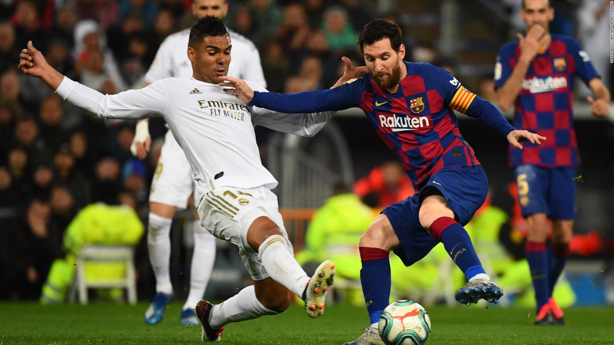
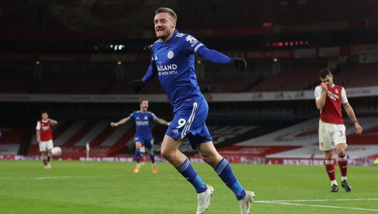

Guardameta, arquero o portero Artículo principal: Guardameta (fútbol) El guardameta, también conocido como portero, arquero o golero, es el jugador cuyo principal objetivo es evitar que la pelota entre a su meta durante el juego, acto conocido como gol. El guardameta es el único jugador que puede tocar la pelota con las manos durante el juego activo, aunque sólo dentro de su propia área. Cada equipo debe presentar un único guardameta en su alineación. En caso de que el jugador deba abandonar el terreno de juego por cualquier motivo, deberá ser sustituido por otro futbolista, ya sea uno que se encuentre jugando o un sustituto. Este tipo de jugadores deben llevar una vestimenta diferente a la de sus compañeros, sus rivales (incluido el guardameta) y el cuerpo arbitral. Por lo general suelen llevar el número 1 estampado sobre la camiseta.
Defensa Artículo principal: Defensa (fútbol) El defensa, también conocido como defensor, es el jugador ubicado una línea delante del guardameta y una por detrás de los centrocampistas, cuyo principal objetivo es detener los ataques del equipo rival. Generalmente esta línea de jugadores se encuentra en forma arqueada, quedando algunos7 defensas más cerca del guardameta que los demás. Si es sólo un jugador el ubicado más atrás, recibe el nombre de líbero; si son dos o más, reciben el nombre de zagueros. Los defensores posicionados en los costados del terreno son llamados laterales o stoppers (en el caso de que haya un libero), y debido a su colocación (más cerca de los centrocampistas) estos pueden avanzar más en el terreno si lo desean. Para nombrarlos se agrega la zona a la palabra defensa: por ejemplo, un defensa que juega por la derecha (mirando hacia la meta rival) sería un lateral derecho. También el arquero debe proteger y dar instrucciones a los defensas.
Centrocampista Artículo principal: Centrocampista El centrocampista, mediocampista o volante es la persona que juega en el mediocampo en un campo de fútbol. Entre sus funciones se encuentran las de recuperar balones, propiciar la creación de jugadas y explotar el juego ofensivo. De acuerdo a estas funciones podemos distinguir: los volantes carrileros (los que juegan más cerca de la línea de banda); los de contención, que juegan casi a la misma altura que los defensores laterales para contribuir a la defensa y pueden ser uno o dos jugadores (el apodo de "Cinco" que se da a estos jugadores se debe a que es el número que suelen llevar en la camiseta); y los de creación o enganches, que se sitúan entre la línea de los carrileros y delanteros (son el cerebro del ataque y se caracterizan por su habilidad).
Delantero Artículo principal: Delantero Un delantero o atacante es un jugador de un equipo de fútbol que se destaca en la posición de ataque, la más cercana a la portería del equipo rival, y es por ello el principal responsable de marcar los goles. Es muy importante estar en movimiento y buscar siempre pase, es decir, desmarcarse para que le sea más fácil al que lleva la pelota pasársela. La velocidad es esencial.